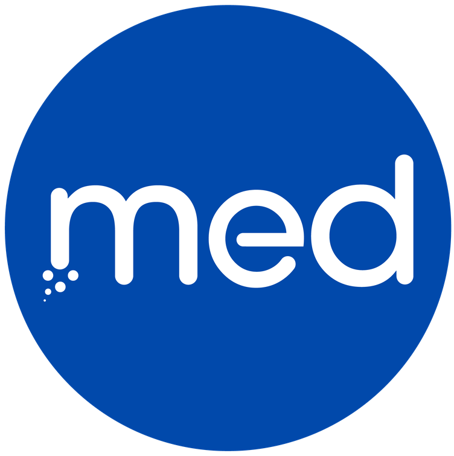

Before I Leave Medical College

Dr. Sidharth NarayananMedinn · Healthcare Intelligence & Media
Before I Leave Medical College
The question
A reflection from within medical education.Dr. Sidharth Narayanan

Before I Leave Medical College · 001A medical college should be more than a place where we learn medicine. It should be a place where we learn what we can do with it.